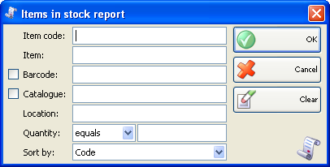
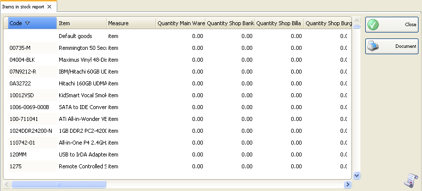

Raport articole in stoc
In prima fereastra a raportului se pot specifica criterii de filtrare si campurile care se vor vizualiza.
Numai liniile bifate se vor vizualiza in raport.

Puteti alege o filtrare pentru fiecare camp prin apasarea tastei F4.
Folositi filtrarea pe cantitate pentru a genera un raport continand numai articole cu cantitatea mai mare decat, mai mica decat sau egala cu o valoare specificata.
In meniul Sort by in partea de jos a listei se pate alege modul de sortare a raportului � dupa cod sau nume articol.
Pentru a sterge toate filtrarile specificate, click pe butonul Clear . In acest caz raportul va afisa toate operatiile efectuate, fara nici o restrictie.
Click pe butonul OK pentru a genera raportul dupa specificarea criteriilor de filtrare. Click pe butonul Cancel pentru inchiderea ferestrei.

�2006-2012 Microinvest, All rights reserved